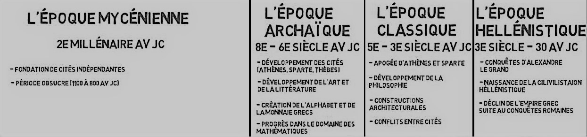

Le Monde Grec
Il y a environ 2 millénaires avant Jésus Christ, une civilisation se forge dans ce pays entre l'Orient et l'Occident. Une civilisation qui a influencé et influence encore aujourd'hui une grande partie du monde. Philosophie, pensée scientifique, art, etc... la Grèce Antique : cette époque entourée de mythes et de légendes, est à l'origine de toutes ces découvertes. Mais pendant cette période, ce pays fut aussi le théâtre de nombreux conflits et guerres, le plus souvent dû à des divergences politiques et religieuses.
La période de la Grèce Antique est divisée en 3 grandes époques:
Il y eut aussi l'époque mycénienne entre le XXème et le VIIème siècle avant J.C. Cette époque est connue pour être le commencement de la Grèce Antique, elle connut vers 1200 avant J.C., la mythique guerre de Troie. Mais ce n'est qu'après que le monde Grec connut sa véritable expansion.
Epoque archaique
Pendant cette période de grandes cités ont vu le jour, notamment Athène, Sparte et Thèbes. Celle-ci voit aussi d'autres développements dans différents domaines comme l'art avec la céramique et la sculpture, la littérature avec par exemple le poète Homère, célèbre pour avoir écrit l’Iliade et l’Odyssée. Et les mathématiques avec Thalès et Pythagore, et leurs célèbres théorèmes. Cette période connut aussi l'apparition de l’alphabet et la monnaie grecs. Et en 776 avant J.-C. environ, ce fut l'avènement des premiers Jeux Olympiques qui eurent lieu à Athènes.
Epoque classique
Cette période est sans doute celle qui a connu le plus de guerres et de changements politiques.
Plus d'informations sur cette époque :